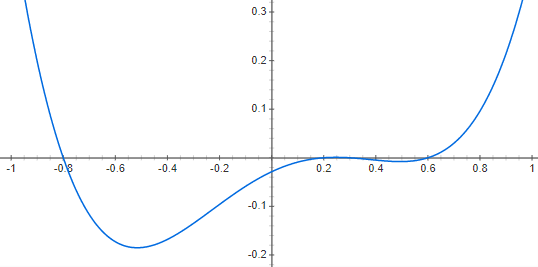
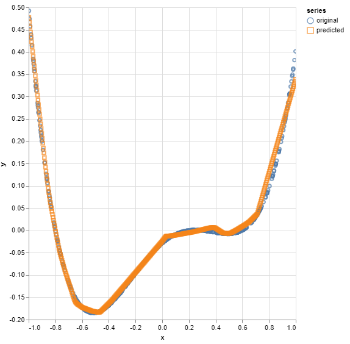
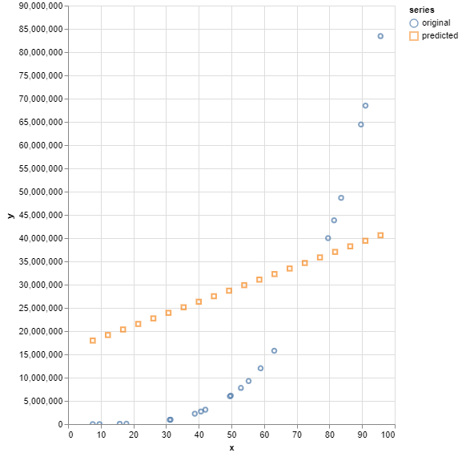
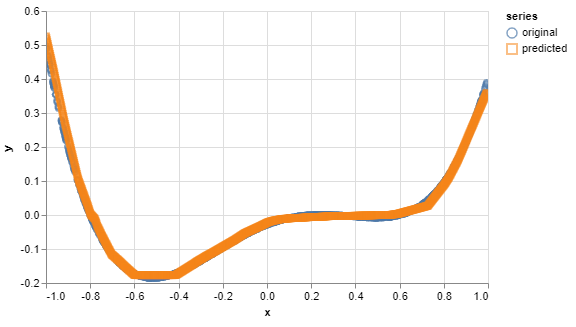

Die Aufgabe bestand darin, ein Feed-Forward-Neural-Network (FFNN) zur Regression der folgenden
reellwertigen Funktion zu nutzen.
Die Anwendung soll dabei interaktiv Input-Daten vom Nutzer vorhersagen können. Er kann dabei
Werte
angeben, die vorhergesagt werden sollen.
Als Objektivfunkton/Loss soll der MSE verwendet werden.
Input- und Output-Neuronen sollen linear sein.
Als
Aktivierungsfunktion soll demnach „none“
(y=x) eingesetzt werden.
Experimente und Fragestellungen
Die Größe des Netzwerkes und die Anzahl N der Trainingsdaten sollen so eingestellt werden,
dass Sie die Phänomene Under- und Overfitting simulieren können. Zum Erzeugen der
Trainingsdaten sollen N zufällige gleichverteilte x-Werte gesampelt und y(x) dazu berechnet
werden.
Es soll anhand unterschiedlichen Trainingsdaten, der Netzwerkarchitektur und der Parameter der
Neuronen
und des Lernalgorithmus experimentiert werden, wobei die folgenden Punkte explizit einstellbar sind.
Anzahl und Auswahl der N
Trainingsdatenpunkte
Anzahl der Hidden Layer und Neuronen
Initialisierung der Gewichte
Aktivierungsfunktionen
Lernrate und Optimizer
Anzahl der Trainings-Epochs
Es soll beantwortet werden, was das beste Ergebnis ist, dass so
erzielbar ist. Dies soll dokumentiert und die
Parameter und Einstellungen begründet sowie, in dem
Zusammenhang,
die Begriffe Bias und Varianz erklärt werden.
Umsetzung
Zuerst habe ich mir die reellwertige Funktion y(x) = (x+0.8)*(x-0.2)*(x-0.3)*(x-0.6) über
WolframAlpha [1] plotten lassen, dabei ergeben sich folgende grafische
Darstellungen.

Anhand des Tutorials „TensorFlow.js — Making Predictions from 2D
Data“
[3] und mithilfe der TensorFlow-Dokumentation [4] habe ich den
Code
für die Anwendung erstellt.
Zum Erzeugen der Trainingsdaten werden N zufällige gleichverteilte
x-Werte gesampelt und y(x) dazu berechnet.
Über die Anwendung ist es möglich, die Anzahl und Auswahl
der
N Trainingsdatenpunkte, die Anzahl der Hidden
Layer
und Neuron, die Initialisierung der Gewichte, die
Aktivierungsfunktionen, Lernrate und Optimizer
sowie
die Anzahl der Trainings-Epochs einzustellen. Ein Nutzer kann
außerdem einen Wert angeben, der ihm darauf vorhergesagt
wird.
Über die einstellbaren Parameter habe ich verschiedene Experimente
durchgeführt. Ich habe darüber versucht, die Phänomene Under- und
Overfitting zu simulieren sowie die Anwendung auf Einstellungen für
gute
Ergebnisse untersucht.
Als Objektivfunkton/Loss wurde dabei der MSE verwendet.
Input- und Output-Neuronen sind linear.
Ergebnisse
Für gute Ergebnisse haben sich bei meiner Umsetzung die folgenden Werte
bewährt.
Anzahl der N Trainingsdatenpunkte: 500
Auswahl der N Trainingsdatenpunkte: -1 bis 1
Anzahl der Hidden Layer: 2
Anzahl der Neuronen: 50
Aktivierungsfunktion: ReLU
Lernrate: 0,01
Optimizer: Adam
Anzahl der Trainings-Epochs: 50
Nach einigen Experimenten hat sich herausgebildet, dass diese Werte sich gut aber nicht zu perfekt an
die
Kurve annähern, weshalb kein Under- oder Overfitting vorherrscht.

Um ein Underfitting-Phänomen hervorzurufen, wurden folgende Werte verwendet.
Anzahl der N Trainingsdatenpunkte: 20
Auswahl der N Trainingsdatenpunkte: 0 bis 100
Anzahl der Hidden Layer: 0
Anzahl der Neuronen: 10
Aktivierungsfunktion: ReLU
Lernrate: 0,01
Optimizer: Adam
Anzahl der Trainings-Epochs: 20
Hier spielt vor allem die geringe Anzahl an Hidden-Layer eine Rolle sowie die Auswahl der
Trainingsdatenpunkte, welche einen nicht sehr repräsentativen Bereich widerspiegeln. Auch die
Anzahl der Neuronen ist relativ gering, sowie die Anzahl der Trainingsdatenpunkte, weshalb diese
auch
nicht sehr repräsentativ sind. Ebenso bedeutet eine kleine Epochen-Anzahl eine geringe
Anpassung an
die Trainingsdaten.

Um ein Overfitting-Phänomen hervorzurufen, wurden folgende Werte verwendet.
Anzahl der N Trainingsdatenpunkte: 1000
Auswahl der N Trainingsdatenpunkte: -1 bis 1
Anzahl der Hidden Layer: 10
Anzahl der Neuronen: 20
Aktivierungsfunktion: ReLU
Lernrate: 0,01
Optimizer: Adam
Anzahl der Trainings-Epochs: 50
Um ein Overfitting hervorzurufen sind Daten notwendig, welche ungefähr gegenteilig der Werte des
Underfittings gestaltet sind. Vor allem spielen die Auswahl eines repräsentativen
Trainingsdatenbereichs, mehr Datenpunkte und eine hohe Anzahl an Hidden-Layers eine Rolle.

Bias und Varianz
Overfitting bedeutet eine annähernd perfekte vorhersage oder Anpassung des
Modells
an jeden Punkt der Trainingsdaten. Ein komplexes, parameterreiches Modell, also ein neuronales Netz
mit
sehr vielen Schichten und sehr vielen Gewichten merkt sich im Extremfall alle Datenpunkte und
interpoliert zwischen ihnen.
Liegt andersherum beispielsweise ein Gewicht vom Input direkt zum Output vor, würden ein
lineares
Modell gelernt werden, in sich das Output-Unit nur einem Input mit einem Parameter und einem Bias
ergibt. In dem Fall würde eine Gerade in die Daten fitten, sprich die Daten würden
underfittet. Die Komplexität des Modells reicht demnach nicht aus, um die
Daten zu
repräsentieren.
Beide Modelle würden hohe Generalisierungsfehler bedeuten. Das underfittete
würde zu stark, das overfittete zu wenig generalisieren.
Komplexe Modelle haben generell eine große Varianz, da sie
sich
mit jedem neuen Trainingsdatensatz oder Sample stark verändern. Es besteht also eine
große
Abhängigkeit von den Trainingsdaten. Jedoch fittet es die Daten sehr stark, es liegt also eine
hohe
Datenapproximation vor beziehungsweise es hat ein geringes Bias, welcher die
Abweichung
des Modells von der Fit-Funktion, also der Ground Truth, angibt. Bei zu einfachen Modellen ist es
genau
andersherum.
Je mehr Daten zu Verfügung stehen, desto mehr nimmt die
Varianz ab
– das sollte vor allem bei großen und komplexen Modellen, bei denen die Varianz hoch
ist,
beachtet werden. Wenn die Zielfunktion sehr komplex ist, erhöht sich der
Bias – das sollte wiederrum bei einfachen Modellen beachtet werden, denn
komplexere reduzieren den Bias.
Demnach ist es ein Ziel, dass das Modell optimal generalisiert, um neue Datenpunkte,
sprich Testdaten, richtig vorherzusagen. Die Komplexität des
Modells sollte dabei zur Komplexität der Zielfunktion passen. Um
das
zu gewährleisten, sollte die Komplexität des Problems und die
vorhandenen Daten bekannt sein, um das Modell entsprechend
auszuwählen. [2]